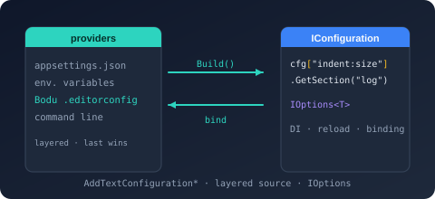

Bodu.Extensions.Configuration.Text Namespace
- Package

Purpose
Bodu.Extensions.Configuration.Text bridges Bodu.Text.Configuration to Microsoft.Extensions.Configuration. It exposes the AddTextConfiguration* entry points on IConfigurationBuilder - the overload set mirrors Microsoft.Extensions.Configuration.Json's AddJsonFile / AddJsonStream - so a Bodu Text Configuration file can be layered alongside JSON, INI, XML, and environment-variable sources with no learning curve.
Once added, the source loads the file (or stream, or pre-parsed document), parses it with ConfigurationDocument, resolves it for the configured TargetPath, and copies the flattened view into the standard IConfiguration dictionary as colon-delimited keys. A companion ConfigurationOptionsExtensions helper binds a section to an IOptions<TOptions> instance through the standard DI container.
Static documentation
- Bodu.Extensions.Configuration.Text introduction - shape of the library, headline types, scenarios.
- Bodu.Extensions.Configuration.Text core concepts - vocabulary: source vs provider, target path, parse/resolve option propagation, reload-on-change, options binding.
- Bodu.Extensions.Configuration.Text getting started - install and minimal samples for the file overload, stream overload, conventional probe, options binding.
- Bodu.Text.Configuration - the underlying parser, resolver, and view model.
Key types
Builder extensions
- TextConfigurationExtensions - the primary entry point. The
AddTextConfiguration*overload family:AddTextConfigurationFile(builder, string path, string? targetPath, bool optional, bool reloadOnChange)- file path.AddTextConfigurationFile(builder, IFileProvider?, string path, string? targetPath, bool optional, bool reloadOnChange)- file path through a specific file provider.AddTextConfigurationFile(builder, Action<TextConfigurationSource> configureSource)- configure callback.AddTextConfiguration(builder, bool optional, bool reloadOnChange)- conventional file probe (.boduconfig→bodu.config).AddTextConfigurationStream(builder, Stream)- stream source (no reload-on-change).AddTextConfigurationDocument(builder, IniDocumentBase, string? targetPath)- pre-parsed document source (e.g. aConfigurationDocument).
- TomlConfigurationExtensions - TOML provider entry points that bridge Bodu.Text.Toml into the configuration pipeline, mirroring the
AddJsonFile/AddJsonStreamshape:AddTomlFile(builder, string path, bool optional = false)- read-once, read-only file source.AddTomlStream(builder, Stream stream)- read-once, read-only stream source (UTF-8 TOML text).
- BencodeConfigurationExtensions - Bencode provider entry points that bridge Bodu.Text.Bencode into the configuration pipeline, with the same shape as the TOML bridge:
AddBencodeFile(builder, string path, bool optional = false)- read-once, read-only file source.AddBencodeStream(builder, Stream stream)- read-once, read-only stream source (a Bencode document with a dictionary root).
Sources and providers
- TextConfigurationSource - file-backed configuration source. Subclasses FileConfigurationSource; inherits
Path,Optional,ReloadOnChange,FileProvider; addsTargetPath,ParseOptions,ResolveOptions. - TextConfigurationProvider - the matching
FileConfigurationProvider. Reads the file via the standard MEC pipeline and projects the resolved view into the inheritedDatadictionary. - TextStreamConfigurationSource - stream-backed configuration source. Subclasses StreamConfigurationSource; adds the same
TargetPath/ParseOptions/ResolveOptionstriple. One-shot - no reload-on-change. - TextStreamConfigurationProvider - the matching
StreamConfigurationProvider. - An internal loader (not part of the public surface) shared by both
Text*providers parses a stream into aConfigurationDocument, resolves it forTargetPath, and flattens the resolved view intoDictionary<string, string?>. - TomlConfigurationSource - TOML configuration source backed by either a one-shot
Streamor a filePath. ImplementsIConfigurationSource; exposesStream,Path, andOptional(a setStreamtakes precedence overPath). Read once when the configuration is built - no reload-on-change machinery. - TomlConfigurationProvider - the matching read-only provider. Implements
IConfigurationProviderdirectly (rather than deriving from the mutableConfigurationProviderbase) and consumes Bodu.Text.Toml's read-only document model, flattening it into the colon-delimited configuration key space;Setis rejected withNotSupportedException, andGetReloadTokenreturns a non-firing token. - BencodeConfigurationSource - Bencode configuration source backed by either a one-shot
Streamor a filePath. ImplementsIConfigurationSource; exposesStream,Path, andOptional(a setStreamtakes precedence overPath). Read once when the configuration is built - no reload-on-change machinery. - BencodeConfigurationProvider - the matching read-only provider, one-for-one with the TOML shape. Consumes Bodu.Text.Bencode's read-only document model with its strict canonical defaults; the document root must be a dictionary, integers render invariant across the full unsigned 64-bit range, and byte strings decode as UTF-8 with U+FFFD replacement.
Setis rejected withNotSupportedException.
Options binding
- ConfigurationOptionsExtensions - DI helpers:
AddConfigurationOptions<TOptions>(services, IConfiguration configuration, string sectionName)- section by name.AddConfigurationOptions<TOptions>(services, IConfigurationSection section)- already-projected section. Both are thin shims overservices.Configure<TOptions>(...)- provided for IntelliSense discoverability.
Example
using Bodu.Extensions.Configuration.Text;
using Bodu.Text.Configuration;
using Microsoft.Extensions.Configuration;
using Microsoft.Extensions.DependencyInjection;
using Microsoft.Extensions.FileProviders;
using Microsoft.Extensions.Options;
IConfiguration configuration = new ConfigurationBuilder()
.AddTextConfigurationFile(src =>
{
src.FileProvider = new PhysicalFileProvider("/etc/myapp");
src.Path = "settings.boduconfig";
src.TargetPath = "src/Foo.cs";
src.Optional = true;
src.ReloadOnChange = true;
src.ParseOptions = ConfigurationParseOptions.EditorConfigCompatible;
src.ResolveOptions = new ConfigurationResolveOptions
{
UnsetValueMode = ConfigurationUnsetValueMode.RemoveEffectiveValue,
};
})
.Build();
string? logLevel = configuration["logging:level:default"];
// Bind a section to a POCO through the DI container.
ServiceCollection services = new();
services.AddOptions();
services.AddConfigurationOptions<ServiceOptions>(configuration, "service");
using ServiceProvider provider = services.BuildServiceProvider();
ServiceOptions options = provider.GetRequiredService<IOptions<ServiceOptions>>().Value;
sealed class ServiceOptions
{
public string? Name { get; set; }
public int Port { get; set; }
}
Notes
- Conventional file probe. The no-argument overload probes the builder's default file provider for
.boduconfig, thenbodu.config. The first file present is loaded; if neither exists andoptionalistrue, the call is a no-op. This matches the dotfile / plain-file convention common in version-controlled repos. - Reload-on-change. TextConfigurationSource inherits
ReloadOnChangefromFileConfigurationSource. When set, the provider attaches a file watcher via the configuredIFileProvider, reparses on change, and triggers the standardIConfigurationreload tokens - so consumers usingMicrosoft.Extensions.Options.IOptionsMonitor<T>rebind automatically. TextStreamConfigurationSource does not support reload; the stream is parsed once whenBuildis called. - File-provider precedence. When
AddTextConfigurationFileis given an explicitIFileProvider, that wins; otherwise the source'sFileProviderwins; otherwise the builder's default applies. Standard MEC precedence is preserved. - Parse / resolve option propagation. Both
ParseOptionsandResolveOptionsdefault tonull, in which caseConfigurationParseOptions.BoduandConfigurationResolveOptions.Boduare used. Set them per-source to mix profiles within a single builder (an EditorConfig-strict file alongside a Bodu-permissive one). - Target path.
TargetPathis per-source. Each source resolves the document for its own target; multiple sources with the same path but different targets are a supported pattern when the application needs configuration evaluated for several paths in parallel. - DI integration. ConfigurationOptionsExtensions is a discoverability shim. Calls to
services.Configure<TOptions>(configuration.GetSection(name))produce equivalent bindings. Callers comfortable with the MEC pattern may use either form interchangeably. - Validation. All public entry points validate inputs via
ThrowHelper.ArgumentNullExceptioncovers null builders / configurations / streams / sections;ArgumentExceptioncovers null, empty, or whitespace path / section-name strings. - See also: the introduction, core concepts, and getting-started; the underlying parser, resolver, and view in Bodu.Text.Configuration.
Classes
- BencodeConfigurationExtensions
Provides extension methods for adding a read-only Bencode configuration source to an IConfigurationBuilder, mirroring the
AddJsonFile/AddJsonStreamshape.
- BencodeConfigurationProvider
A read-only IConfigurationProvider that consumes Bencode through the
Bodu.Text.Bencoderead-only document model and flattens it into the colon-delimited configuration key model. Because the provider exposes no mutation surface, Set(string, string?) is rejected.
- BencodeConfigurationSource
Represents a Bencode configuration source - either a one-shot Stream or a file path - that produces a read-only BencodeConfigurationProvider.
- ConfigurationOptionsExtensions
Provides convenience extension methods for binding a Bodu Text Configuration section to an IOptions<TOptions> instance through an IServiceCollection .
- TextConfigurationExtensions
Provides convenience extension methods for adding a Bodu Text Configuration source to an IConfigurationBuilder. The overload set mirrors
Microsoft.Extensions.Configuration.Json'sAddJsonFile/AddJsonStreamshape so that consumers familiar with the JSON provider can swap in this provider with no learning curve.
- TextConfigurationProvider
A FileConfigurationProvider that parses a Bodu Text Configuration file and populates the configuration data dictionary with the resolved colon-delimited keys.
- TextConfigurationSource
A FileConfigurationSource that reads a Bodu Text Configuration file and projects its resolved view into the IConfiguration hierarchy as colon-delimited keys.
- TextStreamConfigurationProvider
A StreamConfigurationProvider that parses a Bodu Text Configuration stream and populates the configuration data dictionary with the resolved colon-delimited keys.
- TextStreamConfigurationSource
A StreamConfigurationSource that reads a Bodu Text Configuration document from an arbitrary Stream and projects its resolved view into the IConfiguration hierarchy as colon-delimited keys.
- TomlConfigurationExtensions
Provides extension methods for adding a read-only TOML configuration source to an IConfigurationBuilder, mirroring the
AddJsonFile/AddJsonStreamshape.
- TomlConfigurationProvider
A read-only IConfigurationProvider that consumes TOML through the
Bodu.Text.Tomlread-only document model and flattens it into the colon-delimited configuration key model. Because the provider exposes no mutation surface, Set(string, string?) is rejected.
- TomlConfigurationSource
Represents a TOML configuration source - either a one-shot Stream or a file path - that produces a read-only TomlConfigurationProvider.